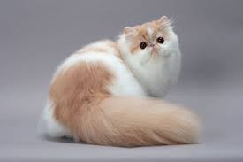

Persian Cat
The Persian cat is a long-haired breed characterized by its round face and short muzzle. They are known for their gentle and calm personality. Persian cats require regular grooming to maintain their luxurious coats.
Characteristics
- Origin: Iran (Persia)
- Life Span: 12-17 years
- Temperament: Affectionate, calm, and gentle
- Coat: Long, thick, and requires regular grooming